1
Scan in at the door
2
Tick the paper register
3
Take a name tent and put it in front of you
4
Pick up a worksheet. Keep it face down.
DO NOT write or start it yet!
5
Scan the QR code and do the practice questions while you wait
And have a pencil ready
✋ Wait! Don’t write
Practice questions
clareroutledge.github.io/
pols0007-practice/practice/
POLS0007 · Week 5 seminar
POLS0007 · Week 5 seminar
Potential outcomes, and the problem of the missing path
Part 1 · Do feedback sessions improve essay grades?
Y₁ᵢ
if they attend
Y₀ᵢ
if they don’t
1 · Reading the notation
What X, Y, i, 1 and 0 mean, using the feedback sessions.
2 · The validity words
Internal and external validity, and the threats we name.
3 · Practice questions
Four question types, with the wrong options knocked out.
POLS0007 · Week 5 seminar
X
The choice
what we do (the treatment)
X = 0: no feedback session
X = 1: goes to a session
X is something we can switch on or off.
Y
The result
what we measure (the outcome)
Y = the grade, for example 58
Y is what we look at afterwards.
X goes in, Y comes out. Does switching X change Y?
POLS0007 · Week 5 seminar
N
Noor
R
Ravi
E
Ella
J
Jon
P
Priya
O
Omar
i = Noor
The little i just means “this student”. Swap in any name.
Xᵢ = 1
Did student i attend? Noor did (1 = yes).
Yᵢ = 68
Student i’s grade afterwards. Noor got 68.
Same letters, different student: for Ravi, Xᵢ = 0 and Yᵢ = 61. The i tells you whose numbers they are.
POLS0007 · Week 5 seminar
Y
1
i
Y₁ᵢ: the grade student i gets if they attend (X = 1)
Y
0
i
Y₀ᵢ: the grade student i gets if they do not attend (X = 0)
Noor’s two possible grades
N
Y₁ᵢ = 68
her grade if she attends
Y₀ᵢ = 61
her grade if she does not attend
These are potential outcomes: both grades exist before Noor chooses.
POLS0007 · Week 5 seminar
N
Noor
Y₁ᵢ = 68
if she attends
Y₀ᵢ = 61
if she does not attend
Xᵢ = 1
Y₀ᵢ = ?
never seen
We see this one: Yᵢᴼᴮˢ = Y₁ᵢ = 68
The counterfactual: what would have happened if she had chosen the other way
The fundamental problem of causal inference
For any one person, we observe only one potential outcome (never both).
POLS0007 · Week 5 seminar
Y₁ᵢ = 68
Y₀ᵢ = 61
7
Y₁ᵢ − Y₀ᵢ = 68 − 61 = 7
The individual causal effect of the session on Noor’s grade.
It is the gap between the two worlds. It needs both grades, which in real life we never have. Only a “data god” could tell us.
POLS0007 · Week 5 seminar
Y₁ᵢ: with a session
Y₀ᵢ: without
Noor
X = 1 · attends
68
61
+7
?
Ravi
X = 0 · skips
66
61
+5
?
Ella
X = 1 · attends
64
58
+6
?
Jon
X = 0 · skips
70
66
+4
?
Only a data god sees both bars for everyone.
In real data each student has one real bar. The other is a “?”.
ATE
Average of every student’s gap, using both bars for everyone:
(7 + 5 + 6 + 4) ÷ 4 = 5.5
Naive comparison
Only the circled grades we actually see, from different students:
attenders (68 + 64) ÷ 2 = 66
non-attenders (61 + 66) ÷ 2 = 63.5
66 − 63.5 = 2.5
ATE = 5.5, naive comparison = 2.5. They differ because the naive comparison compares different people, using only the grades we see.
POLS0007 · Week 5 seminar
Internal validity
The study reliably identifies the causal effect of X on Y, for the people studied.
✓
External validity
The results would likely generalise from the sample to a broader population.
a broader population
POLS0007 · Week 5 seminar
HIGH internal validity
Groups alike to begin with
Attend
Do not attend
A gap in grades points to the sessions. For example: sessions given by lottery.
LOW internal validity
Groups different to begin with
Attend
Do not attend
A gap in grades might not be the sessions. For example: students chose whether to go.
● = keener student ○ = less keen student
POLS0007 · Week 5 seminar
HIGH external validity
Sample looks like the wider population
The result is likely to carry over.
LOW external validity
Sample is one narrow group
For example, one class at one university. The result may not carry over.
POLS0007 · Week 5 seminar
Everyone
Choose to attend
Do not attend
★
★
★
★
★
★ = differs in a way that also affects grades
Self-selection: people choose their own treatment, for reasons that also affect the outcome. So the two groups were never alike.
POLS0007 · Week 5 seminar
Coding club group
No club group
✕
✕
✕
✕
✕
6 of 10 left
9 of 10 left
the ones who left were struggling
Differential attrition: drop-out that differs between the treated and control groups.
The pupils who are left in each group are no longer alike, so the comparison is not fair.
POLS0007 · Week 5 seminar
Class A: new reading game
Class B: no game
pupils share it at break
control pupils who got the treatment anyway
Contamination (spillover): the treatment reaches members of the control group.
Class B is no longer a clean “no treatment” group.
POLS0007 · Week 5 seminar
Experimenter bias
The marker knows who attended.
Attender’s essay
Non-attender’s essay
B+
B
Identical essays, different marks.
Demand effects
Participants guess what the researcher hopes to find.
S
They want me to say it helped!
Did the sessions help? ☑ Yes!
Answers shift to please the researcher.
POLS0007 · Week 5 seminar
A tutoring programme gives some pupils extra reading lessons. For pupil i, what does Y₀ᵢ mean?
A · The reading score pupil i has after the lessons
B · Whether pupil i got the lessons (1 = yes, 0 = no)
C · The reading score pupil i would have without the lessons
D · The gap between pupil i’s two reading scores
That is the score we observe, which is Y₁ᵢ for a pupil who got the lessons.
That is Xᵢ: who got the lessons, not a score.
That is the effect, Y₁ᵢ − Y₀ᵢ.
Right: Y₀ᵢ is the outcome in the “no treatment” world.
POLS0007 · Week 5 seminar
A teacher marks essays knowing which students went to the writing clinic, and gives them the benefit of the doubt. What is the main threat to concluding that the clinic improves grades?
A · Self-selection
B · Differential attrition
C · Contamination
D · Experimenter bias
Choice may matter too, but the stem’s key detail is who is doing the marking.
Nobody is leaving the study in this story.
Nothing here spreads from one group to the other.
Right: the person measuring the outcome knew who was treated.
POLS0007 · Week 5 seminar
In a trial of after-school tutoring, the weakest pupils in the tutored group drop out and are not tested. Compared with the true effect, the estimated effect is likely to be:
A · Too large: those left in the tutored group are stronger
B · Too small: the tutored group is weaker
C · Unaffected: dropping out cannot change an average
D · Reversed in sign
That would be true if the strongest had left instead.
Dropping out of one group changes who is left to average.
Possible only in extreme cases, nothing here suggests it.
Right: the pupils still counted are stronger, which flatters tutoring.
POLS0007 · Week 5 seminar
For student i, Xᵢ = 0, Y₁ᵢ = 70 and Y₀ᵢ = 64. What is the causal effect of the session on student i?
A · 64
B · 0
C · 6
D · We can’t say, we only see one outcome
That is Y₀ᵢ, the grade we observe because Xᵢ = 0.
Xᵢ = 0 says who attended, not the size of the effect.
We have been told both potential outcomes, so we can.
Right: Y₁ᵢ − Y₀ᵢ = 70 − 64 = 6.
POLS0007 · Week 5 seminar
Don’t answer anything yet. Just work out who, what, and what the symbols mean.
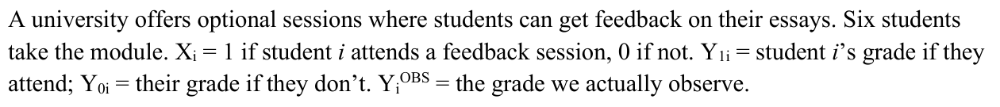
Who and what: six students, optional essay feedback
Xᵢ: did they attend? 1 = yes, 0 = no
Y₁ᵢ: the grade IF they attend
Y₀ᵢ: the grade IF they don’t
Yᵢ OBS: the grade we actually observe
Nothing here asks you to do anything yet. The task comes next.
POLS0007 · Week 5 seminar
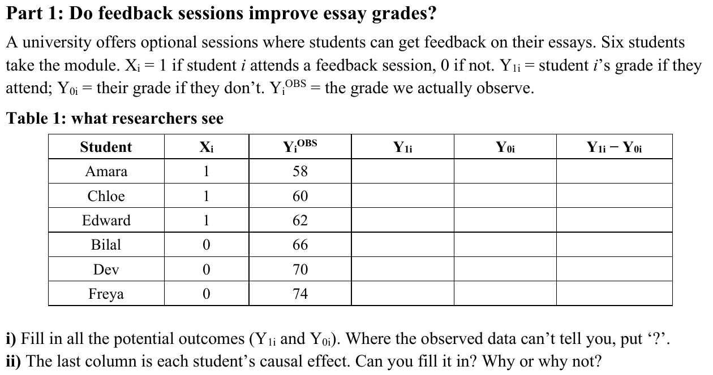
The set-up
The story and the symbols. Read it, mark the key words, answer nothing yet.
The task
The verbs tell you what to write: fill in, put ‘?’, say why.
POLS0007 · Week 5 seminar
Before you answer anything, write the plain-English version of every column.
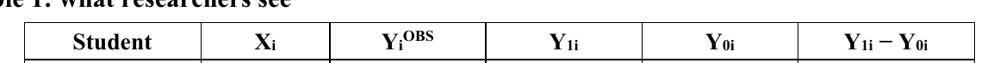
One row = one student
Did they go? 1 = yes, 0 = no
The grade we actually see
Grade IF they attend
Grade IF they don’t
The effect: grade IF attend minus grade IF not
On paper: pencil the plain-English version above each column heading. It takes 20 seconds and the question gets much easier to read.
POLS0007 · Week 5 seminar
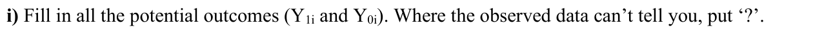
Part i, in plain English
For every student, write two grades: the one if they attend and the one if they don’t. If the table can’t tell you, write ?
Exam move: underline the verbs (fill in, put ?), then say the question out loud in one sentence.
POLS0007 · Week 5 seminar
We only ever see the path each student actually took.
Grade IF they attend (Y₁ᵢ)
Grade IF they don’t (Y₀ᵢ)
Amara
went: Xᵢ = 1
58
Observed: we see this one
?
Never observed: a parallel universe
Bilal
didn’t go: Xᵢ = 0
?
Never observed: a parallel universe
66
Observed: we see this one
Observed grade = the grade on the path they actually took.
POLS0007 · Week 5 seminar
Each student
Did they go?
Grade we see
Grade IF they go
Grade IF they don’t
Effect (attend minus not)
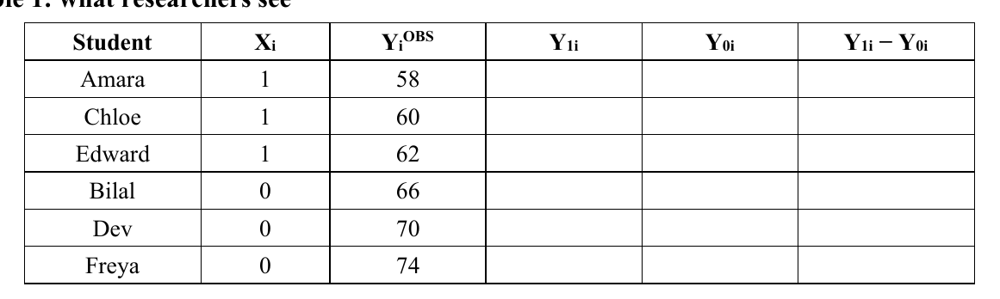
58
She went, so 58 is her grade WITH feedback.
?
Grade WITHOUT feedback? Never seen. So: ?
POLS0007 · Week 5 seminar
Each student
Did they go?
Grade we see
Grade IF they go
Grade IF they don’t
Effect (attend minus not)
58
?
66
He skipped it, so 66 is his grade WITHOUT feedback.
?
Grade WITH feedback? Never seen. So: ?
POLS0007 · Week 5 seminar
Same rule as Amara and Bilal. Remember: ? means unknown, not zero.
58
?
?
66
1 · Think alone: one minute
2 · Compare with your partner
3 · We check it together
POLS0007 · Week 5 seminar
Every row has one number we see and one ? we never will.
58
?
?
66
60
?
62
?
?
70
?
74
Blue = grade WITH feedback (Y₁ᵢ)
Orange = grade WITHOUT (Y₀ᵢ)
? = the path they didn’t take
POLS0007 · Week 5 seminar
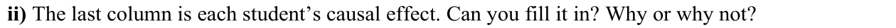
Job 1: a verdict
Can you fill it in? Say yes or no, clearly, and say it first.
Job 2: a reason
Why or why not? Point at the table and use the right words.
A verdict on its own is not an answer. The reason is where you show you understand.
POLS0007 · Week 5 seminar
Answer each prompt in a few words (3 min). Use at least two words from the bank.
1 · Verdict: can we fill it in? Yes or no?
2 · What does Y₁ᵢ − Y₀ᵢ need for each student?
3 · In each row, how many of those do we see?
4 · What is this problem called?
Word bank
potential outcome
the grade on one possible path
observed outcome
the grade we actually see
counterfactual
the path not taken
individual causal effect
Y₁ᵢ − Y₀ᵢ for one student
fundamental problem of causal inference
never seeing both paths for one student
POLS0007 · Week 5 seminar
Four student answers. What’s wrong with each one?
Answer A
“Yes. Amara 58 − Bilal 66 = −8.”
Answer B
“Yes. Put 0 for the ?, so Amara’s effect is 58 − 0 = 58.”
Answer C
“No. Six students is too small a sample.”
Answer D
“No. Students chose to attend, so it’s biased.”
Two different students. A causal effect compares ONE student on both paths.
? is not 0. It means unknown. Writing 0 invents a 58-point effect.
Right verdict, wrong reason. A million students would still each show one path.
Right verdict, wrong problem. Self-selection is about comparing groups, which comes next.
POLS0007 · Week 5 seminar
A thin answer
“No, because there are question marks.”
Right verdict, but it describes the table, not the idea. Why are those cells unknown?
A strong answer
No. Each student either attends or doesn’t, so we only observe one of their two potential outcomes (Y₁ᵢ or Y₀ᵢ). The individual causal effect, Y₁ᵢ − Y₀ᵢ, needs both. This is the fundamental problem of causal inference.
1 · Verdict: a clear no
2 · Reason: what the table shows, one outcome per student
3 · Concept: named in the technical vocabulary
POLS0007 · Week 5 seminar
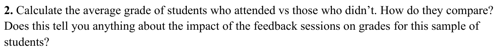
Job 1: calculate
Average grade for attenders, then for non-attenders.
Job 2: compare
Which average is higher, and by how many points?
Job 3: interpret
Does that comparison tell us what the sessions did?
The dashed box matters: “for this sample of students” means this is about these six, not other universities.
POLS0007 · Week 5 seminar
Use the grades we actually see (Yᵢ OBS). Show your sum and your division.
Attenders (Xᵢ = 1)
(58 + 60 + 62) ÷ 3 = 60
Non-attenders (Xᵢ = 0)
(66 + 70 + 74) ÷ 3 = 70
Attenders scored 10 points lower: 60 − 70 = −10
Watch out: not 65, and not “10 higher”.
POLS0007 · Week 5 seminar
1 · What we want
The attenders’ Y₀ᵢ: their grades with no feedback
? ? ?
2 · What we have
The non-attenders’ observed grades, which are their Y₀ᵢ
66 70 74
3 · The swap
Use these as a stand-in for the missing ones
? → 66 70 74
Fair only if both groups would have scored the same without feedback.
Did the students choose whether to attend? Yes. So we can’t just assume that.
POLS0007 · Week 5 seminar
1 · What do you add up for each group, and how many students are in each?
2 · Name the group each average belongs to.
YOUR SENTENCE
Attenders averaged ___ . Non-attenders averaged ___ .
MODEL SENTENCE
Attenders averaged (58 + 60 + 62) ÷ 3 = 60. Non-attenders averaged (66 + 70 + 74) ÷ 3 = 70.
POLS0007 · Week 5 seminar
1 · Which group scored higher?
2 · By how many points? Subtract the smaller from the larger.
YOUR SENTENCE
On average, attenders scored ___ points (higher / lower) than non-attenders.
MODEL SENTENCE
On average, attenders scored 10 points lower than non-attenders (60 vs 70).
POLS0007 · Week 5 seminar
1 · Does “attenders scored 10 lower” show what the sessions did?
2 · What would we need to know instead? (a missing potential outcome)
3 · What did the comparison use in its place? When is that fair?
YOUR SENTENCES
No. We would need the attenders’ ___ , which we never ___ . The comparison uses ___ instead, which is only fair if ___ . Students ___ , so ___ .
MODEL ANSWER
No. We would need the attenders’ Y₀ᵢ (their grade without feedback), which we never see. The comparison uses non-attenders as a stand-in, which is only fair if both groups would have scored the same without feedback. Students chose whether to attend, so we can’t assume that.
POLS0007 · Week 5 seminar
Four answers to job 3. What’s wrong with each one?
A · “Attenders scored 10 lower, so the sessions lowered grades by 10.”
B · “It tells us nothing: it can’t be generalised to other universities.”
C · “Weaker students go to the sessions, so the comparison is unfair.”
D · “No, it’s not a fair comparison.”
A difference is not an effect. The 10 compares two groups; it isn’t what the sessions caused.
Wrong question. The worksheet asks about these six students, so it is about whether the comparison is fair, not other universities.
Plausible, but Table 1 can’t show it. Say what’s missing (the attenders’ Y₀ᵢ) and when the swap would be fair.
Right verdict, vague reason. Fair how? Name the missing grade and the assumption the comparison needs.
POLS0007 · Week 5 seminar
Sentence 1: averages
Attenders averaged 60 and non-attenders averaged 70.
Sentence 2: compare
So attenders scored 10 points lower.
Sentence 3: impact?
No. The comparison uses non-attenders as a stand-in for the attenders’ missing Y₀ᵢ (their grade without feedback). That is only fair if both groups would have scored the same without feedback, and students chose whether to attend.
Self-check: names on the numbers · direction on the gap · “no”, the missing Y₀ᵢ, and why the stand-in fails
POLS0007 · Week 5 seminar
Each student
Did they go?
Grade we see
Grade IF they go
Grade IF they don’t
Effect (attend minus not)
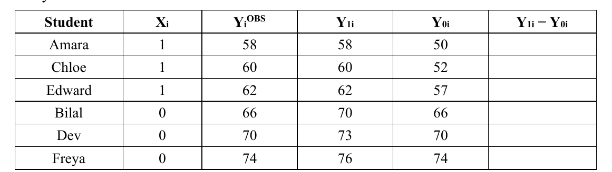
She went, so her observed 58 is Y₁ᵢ. The data god reveals her Y₀ᵢ: 50.
8
Effect = grade IF go minus grade IF not: 58 − 50 = 8 points.
POLS0007 · Week 5 seminar
Same rule for every row: grade IF they go minus grade IF they don’t.
8
8
5
4
3
2
Spot the pattern: every effect is positive, and lower grades gain most.
POLS0007 · Week 5 seminar
Y₀ᵢ: no feedback
Effect: Y₁ᵢ − Y₀ᵢ
Amara
+8
Chloe
+8
Edward
+5
Bilal
+4
Dev
+3
Freya
+2
Now average the six bars
Average Y₀ᵢ = 61.5
Average Y₁ᵢ = 66.5
+5
Average the yellow bits: (8 + 8 + 5 + 4 + 3 + 2) ÷ 6 = 5
Gap between the average bars: 66.5 − 61.5 = 5
Same yellow, two routes: the average of the effects = the effect of the averages.
POLS0007 · Week 5 seminar
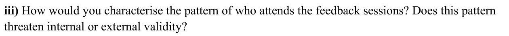
Question 1: who attends?
• Look at the Y₀ᵢ column only.
• What would each group score with no feedback?
• So who chooses to attend?
Without feedback, attenders would have averaged ___ and non-attenders ___ , so ___ students choose to attend.
Question 2: internal or external?
• Is the comparison wrong even for these six students?
• Wrong for the people studied = internal. Won’t carry over elsewhere = external.
This threatens ___ validity because ___ .
POLS0007 · Week 5 seminar
Look only at the Y₀ᵢ column: what each group would score with no feedback.
8
8
5
4
3
2
Attenders, with no feedback
(50 + 52 + 57) ÷ 3 = 53
Non-attenders, with no feedback
(66 + 70 + 74) ÷ 3 = 70
17 points apart
POLS0007 · Week 5 seminar
Attenders, no feedback (their average Y₀ᵢ)
53
Attenders, with feedback (what we observe)
+7
60
Non-attenders (observed = their Y₀ᵢ)
70
Gap before any session: 70 − 53 = 17
17
Gap the naive comparison sees: 70 − 60 = 10
10
The sessions lift the attenders by 7, but they start 17 behind. So the comparison shows them only 10 behind, and the benefit is hidden.
POLS0007 · Week 5 seminar
⚖️ Internal validity
Is the comparison fair for the people in the study?
Here: attenders 60 vs non-attenders 70 gives −10, but the true ATE is +5.
🌍 External validity
Would the result carry over to other people, places and times?
Here: would these six students’ results hold in other universities or other years?
Our problem: the comparison gets the wrong answer even for these six students.
So it threatens internal validity. The name for the problem is self-selection.
POLS0007 · Week 5 seminar
Four answers to Q3 iii. What’s wrong with each one?
A · “External validity: only six students, so it won’t generalise.”
B · “Stronger students attend, so the sessions look better than they are.”
C · “Internal validity, because the sessions don’t work.”
D · “Internal validity. Self-selection.”
Wrong kind of validity. External is about other people and places; here the comparison is wrong even for these six.
Wrong direction. Here weaker students attend, so the comparison understates the sessions. Self-selection can bias either way.
Right label, wrong reason. The sessions do help (ATE = 5). Internal validity is about whether the comparison is fair.
Right labels, no explanation. Say who selects, what that does to the comparison, and why that breaks it.
POLS0007 · Week 5 seminar
A THIN ANSWER
“Self-selection, so internal validity.”
Right labels, but where is the evidence?
A STRONG ANSWER
Part 1. Weaker students choose to attend. Without feedback, attenders would have averaged 53 and non-attenders 70, a 17-point gap before the sessions do anything. Part 2. This is self-selection, a threat to internal validity: the naive comparison (−10) gets the wrong answer even for these six students, because the true ATE is +5. External validity is a different question: whether the result carries over to other people and settings.
Part 1 · The pattern, with the Y₀ᵢ numbers
Part 2 · The label, and why it is internal
Bonus · External validity is a different question
POLS0007 · Week 5 seminar
Who
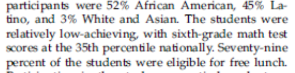
Low-achieving 7th graders, 79% on free lunch
Where
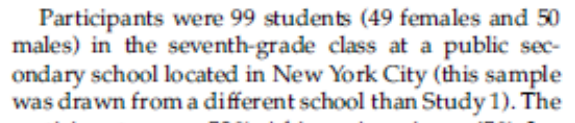
One public secondary school in New York City
What
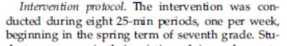
Eight weekly 25-minute sessions
Delivered by
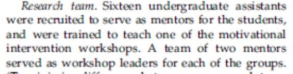
Pairs of trained undergraduate mentors
Outcome
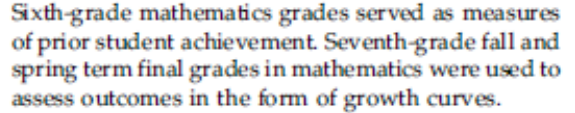
Maths grades (0–4) from the maths teacher
Comparison
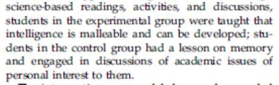
Control workshop: a memory lesson instead of the mindset message
POLS0007 · Week 5 seminar
🏛️ DfE
The Department for Education: the part of government in charge of schools in England.
🧠 Growth mindset programme
Teaches pupils that intelligence can grow with effort and good strategies. Same message as Study 2.
🎒 Year 6 pupils
Age 10–11, the last year of primary school in England.
👩🏫 Delivered by class teachers
Teachers run the sessions for their own class, after a short training course.
POLS0007 · Week 5 seminar
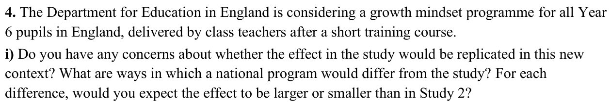
1 · Spot the differences
How would a national programme differ from Study 2?
2 · Larger or smaller?
For each difference, would the effect be bigger or smaller than in Study 2?
3 · Why?
Give a reason for each direction. A direction with no reason earns nothing.
POLS0007 · Week 5 seminar
Part i · What is different about the national programme?
Larger or smaller?
Why?
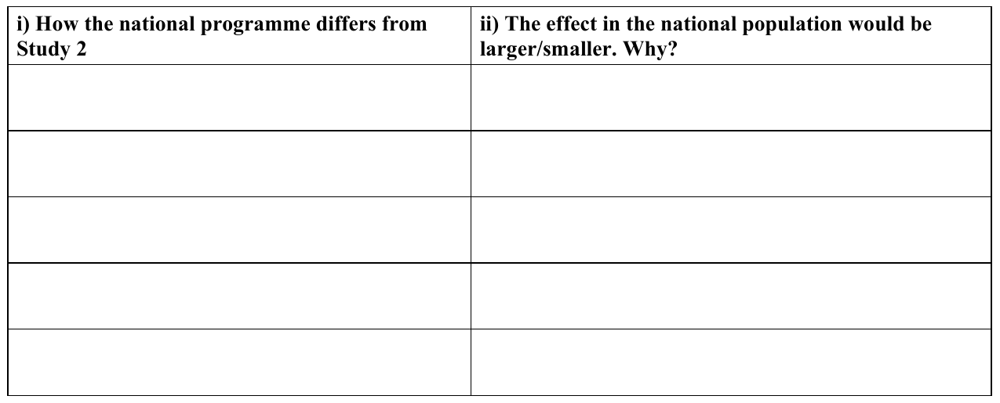
Delivery: class teachers after a short course, not trained mentors
Smaller because delivery is likely to be less faithful
Rows 2 to 5: your turn.
POLS0007 · Week 5 seminar
People
Who was in Study 2? Who are Year 6 pupils?
Setting
Where was Study 2? What is school like for Year 6?
Delivery
Who ran the sessions in Study 2, and who would now?
Outcome
What was measured in Study 2, and what would be now?
Comparison
What did the other group get in Study 2, and what now?
SENTENCE FRAME
The national programme ___ , but in Study 2 ___ .
So I expect the effect to be larger / smaller because ___ .
Aim for one frame per row.
Stuck on Study 2? The six tiles on the “what the paper says” slide have the answers.
POLS0007 · Week 5 seminar
1 · Name the difference
2 · Say why it matters for the effect
3 · Say larger or smaller than in Study 2
Delivery → smaller
Class teachers get only a short course, so they may deliver it less faithfully than Study 2’s trained mentors.
Delivery → larger?
Class teachers know their pupils and see them every day, so they could reinforce the message better than visiting mentors.
Either direction can earn marks. What matters is the logic.
Name the difference, say why it changes the effect, and compare with Study 2. “Smaller because it’s different” earns nothing.
POLS0007 · Week 5 seminar
i) How the national programme differs from Study 2
ii) The effect would be larger/smaller. Why?
People: all Year 6 pupils (age 10–11), not low-achieving 7th graders
Smaller: average pupils have less room to improve than low achievers
Setting: English primary schools, with no move to a new school
Smaller: mindset matters most when school suddenly gets harder (p. 258)
Delivery: class teachers after a short course, not trained mentors
Smaller: delivery is likely to be less faithful
Outcome: national standardised tests, not teacher-given grades
Smaller: test scores are harder to move than grades
Comparison: no alternative workshop for the other pupils
Bigger?: Study 2’s control workshop may have helped controls, shrinking the gap
POLS0007 · Week 5 seminar
Four answers to Q4. What is missing from each one?
A · Bigger, because there would be more pupils.
B · The same, because it’s the same programme.
C · Smaller, because teachers aren’t as good.
D · Smaller, because it’s a different context.
More pupils make an estimate more precise, not an effect bigger. Name a real difference.
Same label, different context. Compare who, where, who delivers it and how it is measured.
Right direction, but an assumption. Say what differs: a short course, not trained mentors.
Right direction, no detail. Which difference? Why does it shrink the effect?
POLS0007 · Week 5 seminar
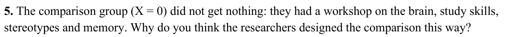
1 · What did the control group get that the mindset group also got?
2 · If the control group got nothing, what would the study measure?
3 · So what does the control workshop let you isolate?
4 · Part 1 link: what is inside Y₀ᵢ for these students?
From the paper (Study 2):
WORD BANK
adult attention · novelty · new concepts
isolate · hold constant
the whole package · Y₀ᵢ
POLS0007 · Week 5 seminar
Four answers to Q5. What is wrong with each one?
A · So the control group wouldn’t feel left out.
B · To hide which group got the treatment.
C · To make it a fair test.
D · To measure the effect of the whole workshop.
Kind, but not the research reason. What does the comparison need to hold equal?
That is a different threat (Q6). Q5 is about what is held constant.
Right idea, no mechanism. Fair how? Name what is held equal.
Backwards. With no workshop you would measure the whole package.
POLS0007 · Week 5 seminar
A THIN ANSWER
“To make it a fair test.”
Fair in what way? What is being kept the same?
A STRONG ANSWER
Every student gets the same amount of adult attention, new concepts and research novelty, so the only difference between groups is the growth mindset message. This isolates the effect of the message. With no workshop, the study would estimate the effect of the whole package, including extra attention. In Part 1 terms, the control students’ Y₀ᵢ includes getting a workshop and adult attention.
1 · What is held constant: attention, concepts, novelty
2 · What it isolates: the message, not the package
3 · Link to Part 1: what Y₀ᵢ contains
POLS0007 · Week 5 seminar
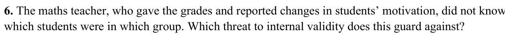
1 · Who gave the grades, and what did they not know?
2 · What might a teacher who knew the groups do differently?
3 · Which threat on the menu is that? Why not the others?
4 · Who still knew which group they were in?
From the paper (Study 2):
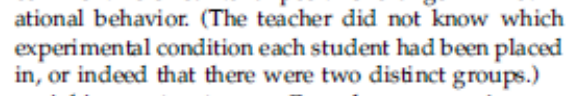
THREAT MENU
Self-selection
Differential attrition
Contamination
Experimenter bias
Demand effects
POLS0007 · Week 5 seminar
Four answers to Q6. What is wrong with each one?
A · Self-selection.
B · Differential attrition, because some students dropped out.
C · Contamination, because the groups shared a school.
D · Bias.
Nobody chose their group: whole advisory classes were randomly assigned.
A real issue, wrong fix. What the teacher knows does not change who leaves.
Plausible, but a different threat. Blinding the teacher is not about spillover.
Too thin. Whose bias? What would the teacher do? Name it and show how it works.
POLS0007 · Week 5 seminar
A THIN ANSWER
“Experimenter bias.”
Right label. How would the bias happen?
A STRONG ANSWER
This guards against experimenter bias and demand effects (the Clever Hans problem). A teacher who knew who was treated might grade them, or notice their effort, differently without meaning to, so a difference in grades could reflect expectations rather than the workshop. Because the teacher did not know, that is guarded against. But the students knew what they were taught, so student-side demand effects are not ruled out.
1 · Name the threat: experimenter bias / demand effects
2 · The mechanism: what a teacher who knew might do
3 · The limit: students knew what they were taught
POLS0007 · Week 5 seminar
Extra: the EEF Changing Mindsets trial, a randomised trial of a national-style roll-out.
5,018
Year 6 pupils in 101 primary schools, randomised, 2016–17.
−0.01 SD
Maths effect. Confidence interval: −0.04 to 0.01.
−0.00 SD
Reading, and grammar, punctuation and spelling. Zero months’ progress.
Why might that be?
Over a third of teachers in the comparison schools had already had growth mindset training. The comparison group was not “no mindset”.
Look back at the Q4 table: which row does this remind you of?
Source: Foliano, Rolfe, Buzzeo, Runge & Wilkinson (2019), NIESR evaluation for the Education Endowment Foundation.
POLS0007 · Week 5 seminar
Internal validity
Did we get the right answer for the people we studied?
Self-selection
Differential attrition
Contamination
Experimenter bias / demand effects
External validity
Would the result carry over somewhere else?
People: who was in the study?
Setting: where, and in what conditions?
Time: when?
Scale: general equilibrium effects
Three exam habits
Say the column headings in words · split the set-up from the task · name the idea, then show it with the numbers.
POLS0007 · Week 5 seminar
Keep it FACE DOWN until I say “go”
1
Write your group at the top
Write G1, G2, G3 or G4, whichever you are. Do this when I say go.
2
Circle your answers
Circle the one best answer. Changed your mind? Cross the old one out clearly.
3
No talking
Not until every sheet is in my hand. Eyes on your own paper.
4
Pass along the row
When time is up, pass your sheet along the row to the end. I’ll collect them.
POLS0007 · Week 5 seminar
5:00
While you work
Group at the top: G1, G2, G3 or G4
Circle your answers
Silent, eyes on your own paper
Pencils down when time is up
No talking until all sheets are in my hand
POLS0007 · Week 5 seminar
Check: G1, G2, G3 or G4 at the top of the page?
1
Pencils down, stay silent
Still no talking until every sheet is in my hand.
2
Pass it along the row
Pass your sheet to the end of your row, face down.
POLS0007 · Week 5 seminar